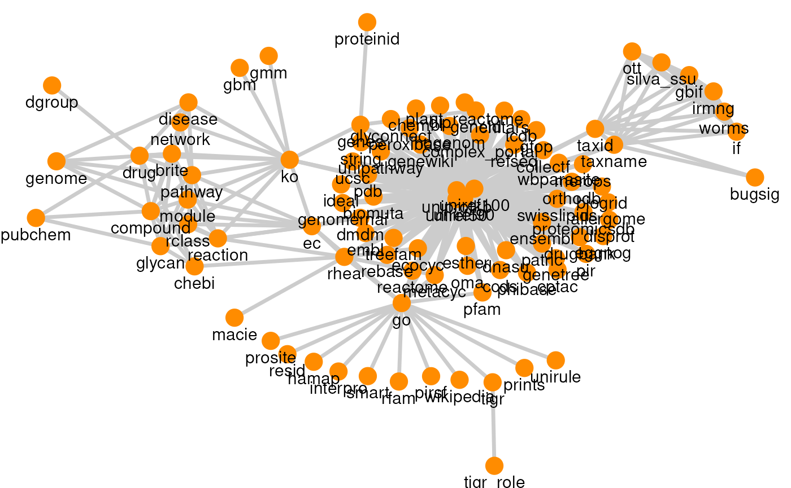
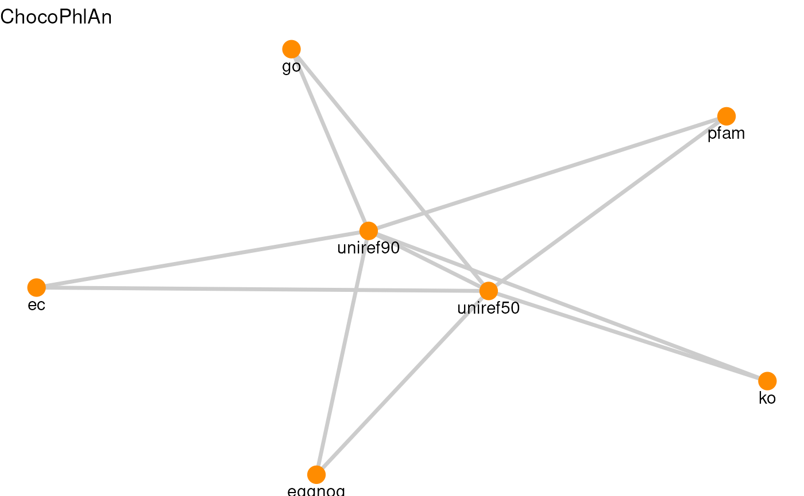
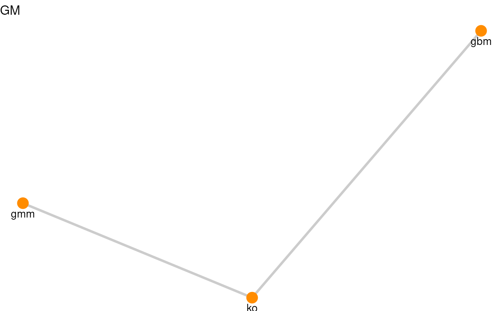
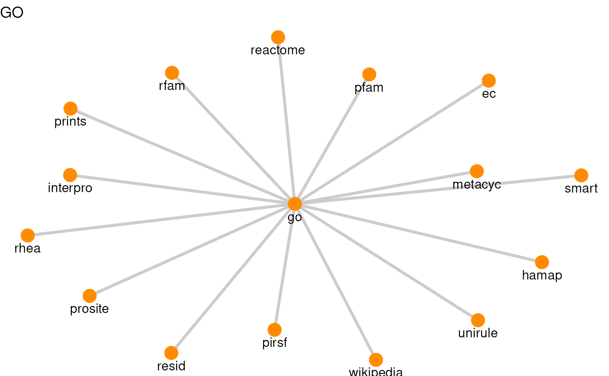
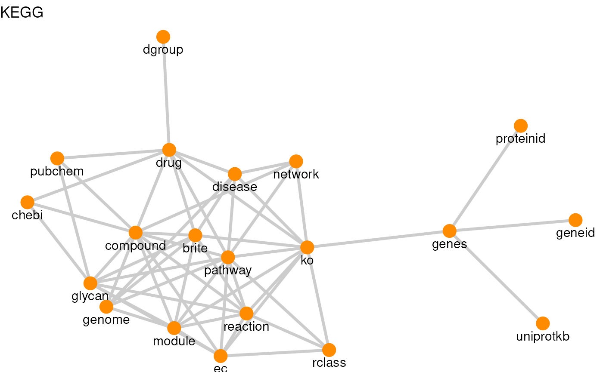
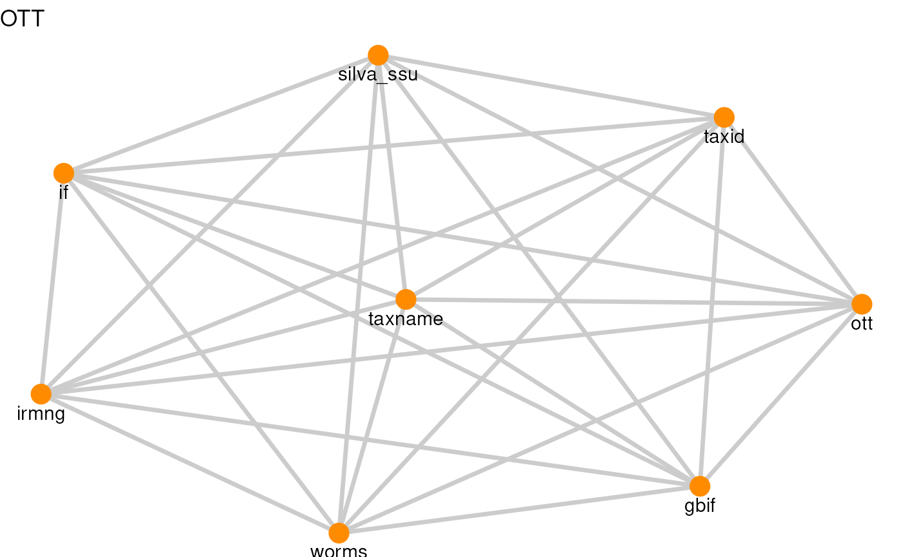
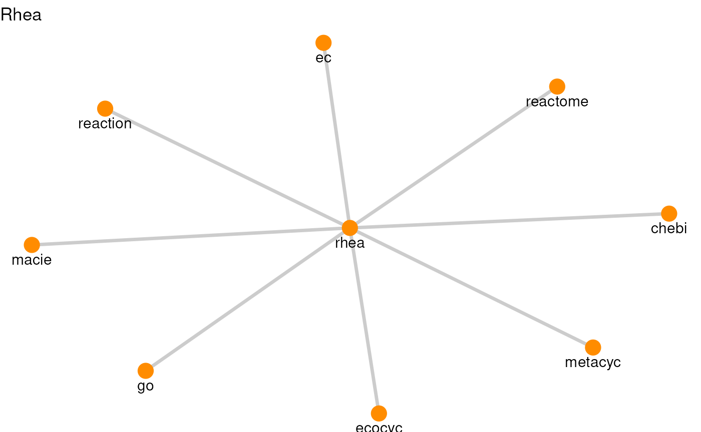
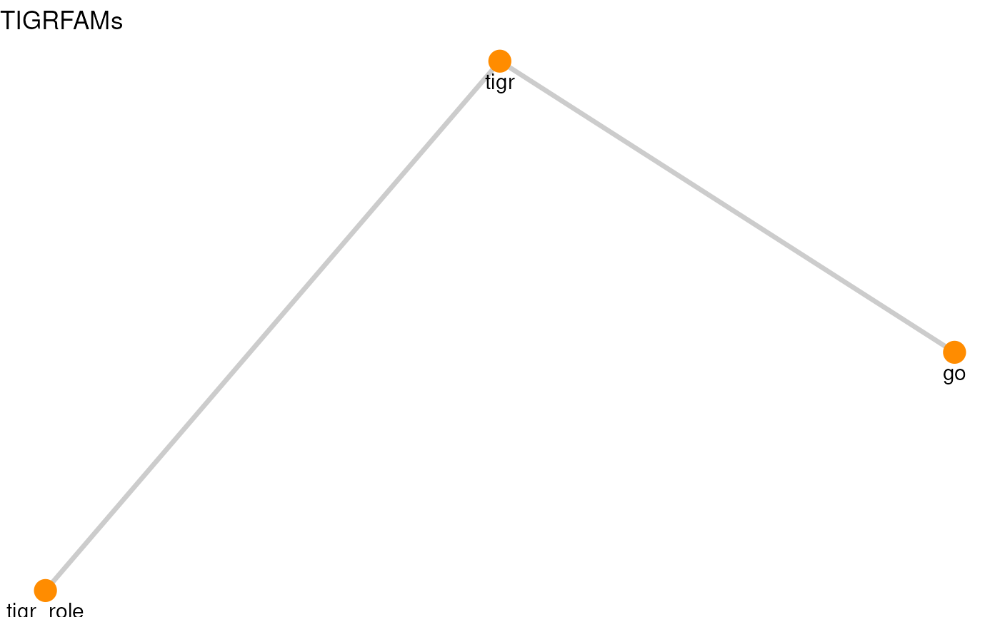
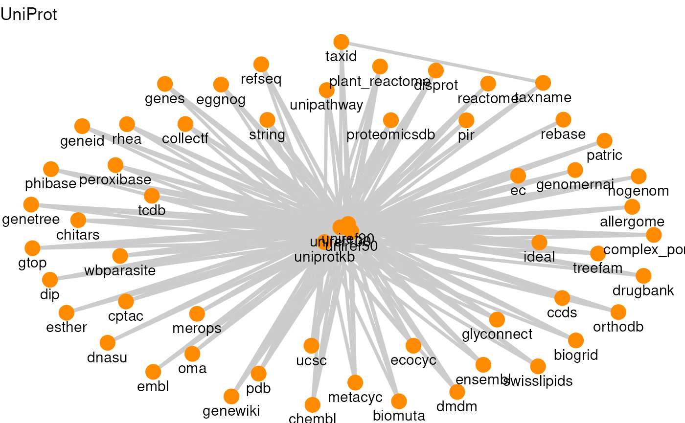
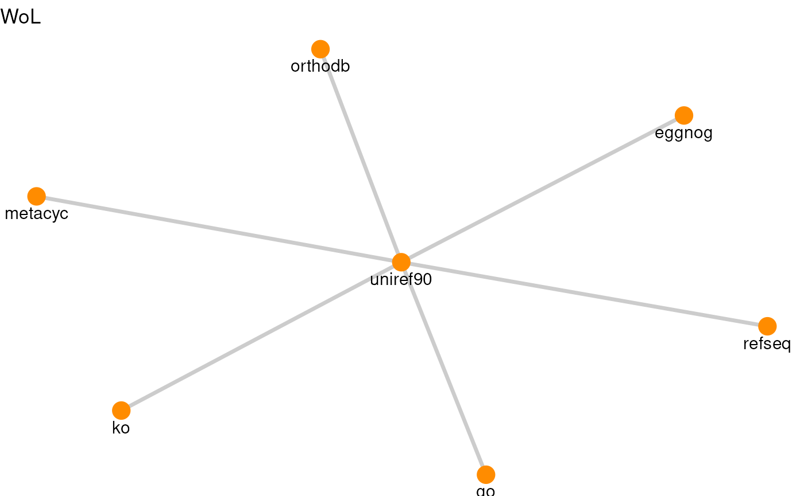

vignettes/resources.Rmd
resources.Rmd
library(ariadne)
#> Registered S3 method overwritten by 'bit64':
#> method from
#> print.bitstring tools
library(igraph)
#>
#> Attaching package: 'igraph'
#> The following objects are masked from 'package:stats':
#>
#> decompose, spectrum
#> The following object is masked from 'package:base':
#>
#> union
library(dplyr)
#>
#> Attaching package: 'dplyr'
#> The following objects are masked from 'package:igraph':
#>
#> as_data_frame, groups, union
#> The following objects are masked from 'package:stats':
#>
#> filter, lag
#> The following objects are masked from 'package:base':
#>
#> intersect, setdiff, setequal, union
library(ggplot2)
graph_df <- igraph::as_data_frame(graph, what = "both")
edge_df <- graph_df$edges
node_df <- graph_df$vertices
df <- edge_df |>
group_by(source) |>
summarise(edges = n(), nodes = n_distinct(c(from, to)))
df
#> # A tibble: 10 × 3
#> source edges nodes
#> <chr> <int> <int>
#> 1 BugSigDB 2 3
#> 2 ChocoPhlAn 11 7
#> 3 GM 2 3
#> 4 GO 15 16
#> 5 KEGG 56 20
#> 6 OTT 28 8
#> 7 Rhea 8 9
#> 8 TIGRFAMs 2 3
#> 9 UniProt 214 57
#> 10 WoL 6 7
for( resource in df$source ){
res_df <- edge_df[edge_df$source == resource, c("from", "to")]
res_graph <- graph_from_data_frame(res_df)
p <- plotPath(res_graph) + ggtitle(resource)
print(p)
}








R session information:
#> R Under development (unstable) (2026-03-28 r89738)
#> Platform: x86_64-pc-linux-gnu
#> Running under: Ubuntu 24.04.4 LTS
#>
#> Matrix products: default
#> BLAS: /usr/lib/x86_64-linux-gnu/openblas-pthread/libblas.so.3
#> LAPACK: /usr/lib/x86_64-linux-gnu/openblas-pthread/libopenblasp-r0.3.26.so; LAPACK version 3.12.0
#>
#> locale:
#> [1] LC_CTYPE=en_US.UTF-8 LC_NUMERIC=C LC_TIME=en_US.UTF-8 LC_COLLATE=en_US.UTF-8
#> [5] LC_MONETARY=en_US.UTF-8 LC_MESSAGES=en_US.UTF-8 LC_PAPER=en_US.UTF-8 LC_NAME=C
#> [9] LC_ADDRESS=C LC_TELEPHONE=C LC_MEASUREMENT=en_US.UTF-8 LC_IDENTIFICATION=C
#>
#> time zone: UTC
#> tzcode source: system (glibc)
#>
#> attached base packages:
#> [1] stats graphics grDevices utils datasets methods base
#>
#> other attached packages:
#> [1] ggplot2_4.0.2 dplyr_1.2.0 igraph_2.2.2 ariadne_0.2.1 BiocStyle_2.39.0
#>
#> loaded via a namespace (and not attached):
#> [1] DBI_1.3.0 gridExtra_2.3 httr2_1.2.2 rlang_1.1.7
#> [5] magrittr_2.0.4 otel_0.2.0 matrixStats_1.5.0 compiler_4.7.0
#> [9] RSQLite_2.4.6 png_0.1-9 systemfonts_1.3.2 vctrs_0.7.2
#> [13] stringr_1.6.0 pkgconfig_2.0.3 crayon_1.5.3 fastmap_1.2.0
#> [17] dbplyr_2.5.2 XVector_0.51.0 labeling_0.4.3 ggraph_2.2.2
#> [21] utf8_1.2.6 rmarkdown_2.31 tzdb_0.5.0 ragg_1.5.2
#> [25] purrr_1.2.1 bit_4.6.0 xfun_0.57 cachem_1.1.0
#> [29] jsonlite_2.0.0 progress_1.2.3 blob_1.3.0 DelayedArray_0.37.1
#> [33] BiocParallel_1.45.0 tweenr_2.0.3 prettyunits_1.2.0 parallel_4.7.0
#> [37] R6_2.6.1 MultiFactor_0.1.2 stringi_1.8.7 bslib_0.10.0
#> [41] RColorBrewer_1.1-3 GenomicRanges_1.63.1 jquerylib_0.1.4 Rcpp_1.1.1
#> [45] Seqinfo_1.1.0 bookdown_0.46 assertthat_0.2.1 SummarizedExperiment_1.41.1
#> [49] knitr_1.51 readr_2.2.0 IRanges_2.45.0 rentrez_1.2.4
#> [53] rotl_3.1.1 Matrix_1.7-5 tidyselect_1.2.1 abind_1.4-8
#> [57] yaml_2.3.12 viridis_0.6.5 codetools_0.2-20 curl_7.0.0
#> [61] lattice_0.22-9 tibble_3.3.1 Biobase_2.71.0 withr_3.0.2
#> [65] KEGGREST_1.51.1 S7_0.2.1 evaluate_1.0.5 desc_1.4.3
#> [69] polyclip_1.10-7 BiocFileCache_3.1.0 Biostrings_2.79.5 pillar_1.11.1
#> [73] BiocManager_1.30.27 filelock_1.0.3 MatrixGenerics_1.23.0 stats4_4.7.0
#> [77] generics_0.1.4 S4Vectors_0.49.0 hms_1.1.4 scales_1.4.0
#> [81] rncl_0.8.9 glue_1.8.0 tools_4.7.0 data.table_1.18.2.1
#> [85] XML_3.99-0.23 fs_2.0.1 graphlayouts_1.2.3 tidygraph_1.3.1
#> [89] grid_4.7.0 ape_5.8-1 tidyr_1.3.2 nlme_3.1-169
#> [93] ggforce_0.5.0 cli_3.6.5 rappdirs_0.3.4 textshaping_1.0.5
#> [97] S4Arrays_1.11.1 viridisLite_0.4.3 arrow_23.0.1.2 gtable_0.3.6
#> [101] sass_0.4.10 digest_0.6.39 BiocGenerics_0.57.0 SparseArray_1.11.12
#> [105] ggrepel_0.9.8 htmlwidgets_1.6.4 farver_2.1.2 memoise_2.0.1
#> [109] htmltools_0.5.9 pkgdown_2.2.0 lifecycle_1.0.5 httr_1.4.8
#> [113] bit64_4.6.0-1 MASS_7.3-65